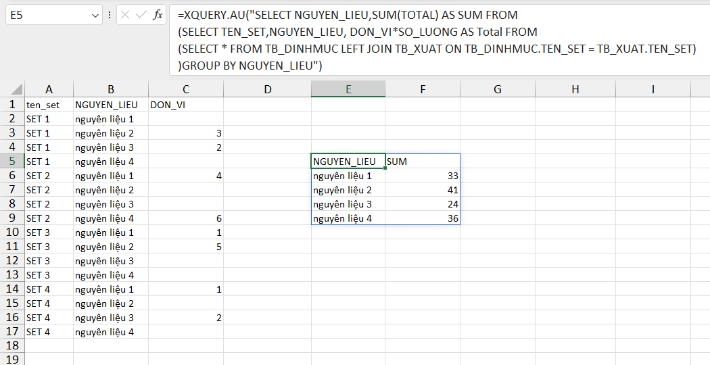

Dưới đây là ví dụ truy vấn CSDL từ AUExpress Tools (chỉ tồn tại trong mỗi phiên Excel).
Bước 1: Thiết lập tên phạm vi
Bước 2: Tạo bộ dữ liệu thông qua tính năng XQUERY (Ribbon)
Bước 3: Tiến hành truy vấn bảng
=XQUERY.AU("SELECT NGUYEN_LIEU,SUM(TOTAL) AS SUM FROM
(SELECT TEN_SET,NGUYEN_LIEU, DON_VI*SO_LUONG AS Total FROM
(SELECT * FROM TB_DINHMUC LEFT JOIN TB_XUAT ON TB_DINHMUC.TEN_SET = TB_XUAT.TEN_SET)
)GROUP BY NGUYEN_LIEU")
Phân biệt giữa các hàm: QUERY (hàm truy vấn động SQLite), XQUERY (hàm truy vấn tĩnh SQLite)
Phân biệt giữa các hàm: SQL (hàm truy vấn động CSDL được hỗ trợ), XSQL(hàm truy vấn tĩnh CSDL được hỗ trợ)
Phân biệt tính năng XQUERY-Ribbon (dùng để tạo và quản lý các bảng CSDL SQLite của AUExpress_Tools)
Phân biệt tính năng XSQL-Ribbon (dùng để thiết lập kết nối tới các CSDL: SQLServer, SQLite, MySQL..)
Trong ví dụ trên, để có thể thực hiện truy vấn qua hàm XQUERY, chúng tôi đã sử dụng tính năng XQUERY để tạo bảng dữ liệu riêng.
Các bảng dữ liệu riêng của AUExpress-Tools được kết nối tự động do đó hàm XQUERY không cần tới Database-ID.
Nếu bạn có CSDL và tạo bảng dữ liệu từ trước, bạn không dùng tới XQUERY để tạo mà sử dụng XSQL để kết nối tới Database của bạn qua Database-ID.
Cuối cùng sử dụng hàm XQUERY + database-ID này để truy vấn.
Xem hàm QUERY
Related function
QUERY Truy vấn dữ liệu động SQLite Database.
PIVOT Tương tự chức năng PIVOT trong Power Query.
Return to Home